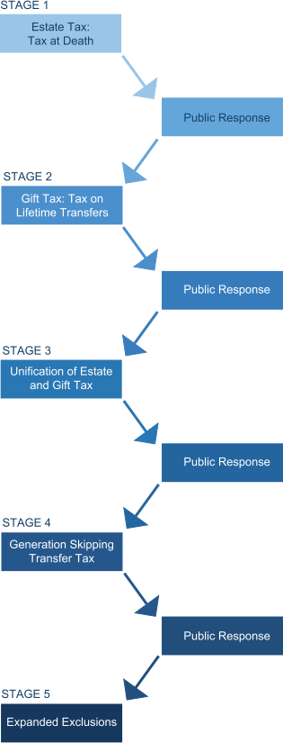

Most Americans alive today have never lived in a time without transfer taxes. But transfer taxation in the United States is a fairly modern form of taxation, which developed in stages. Each stage was followed by a change in public behavior that led to Congress responding with the next stage of development. The presentation below will provide information on the progressive development of the transfer tax system.
Roll the mouse pointer over each development path below:
